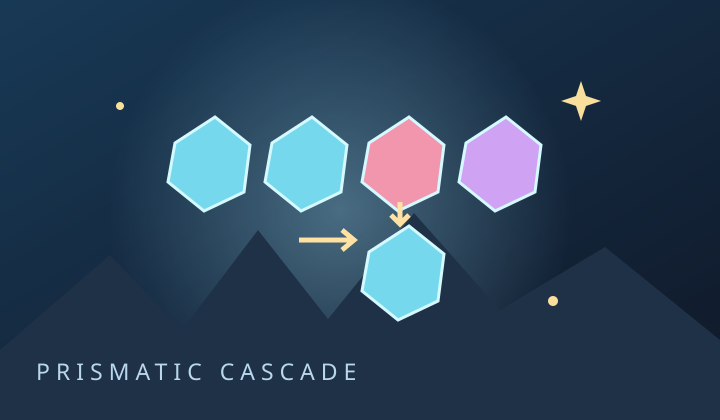

PRISMATIC CASCADE
晶彩連鎖
交換晶石，讓一道光改變整座礦脈。

開發試玩版：目前只有第 01、25、50 關。完整 50 關與遊玩節奏仍在製作、驗證中。這是原創非官方致敬作品。
準備探索
手動挑戰
分數0
剩餘機會—
已完成0 / 3
查看本步連鎖紀錄
- 開始後，這裡會記錄每一波實際變化。
六色都附不同形狀：● ◆ ▲ ✦ ■ ✚。
操作與規則
1. 點兩顆相鄰晶石，或拖到鄰格交換。至少三連才扣一步。
2. 四連留下 ◆ 爆破石，交換可炸開周圍九格。五連留下 ✹ 色彩核心，交換可清掉另一顆的全部同色。
3. 棕色礦殼需要在旁邊消除，數字代表剩餘層數。信標 ⌂ 只能從標記出口落下。
4. 孔洞把重力分成數段。主線無合法交換就是死局；經典模式可手動重新排列。
鍵盤：方向鍵移游標，Enter 選格；Escape 清選取。
設定、紀錄與備份
提示紀錄與手動過關分開。關卡可自由選擇，沒有等待解鎖。